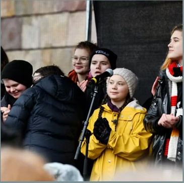
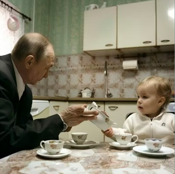

Trovärdig artikel:
• etablerad avsändare
• rimligt datum
• namngivna källor
AI avslöjas ofta genom:
• händer och fingrar
• skuggor
• konstig text
Fråga dig alltid:
• Vem säger detta?
• När?
• Varför?
• Kan det kontrolleras?
En influencer sprider påståenden om att nationella proven har läckt. Men stämmer det?
🔒 Öppna alla artiklar först.
Klicka för att markera. Klicka igen för att ångra. Dubbelklicka för zoom.


1. Vad är viktigast att kontrollera först?
2. En sak som gjorde en artikel otrovärdig:
3. En detalj som avslöjade AI‑bild:
4. Att vara källkritisk betyder att man…
5. Var möter du detta i vardagen?
Diskutera hur du kan använda källkritik i vardagen.